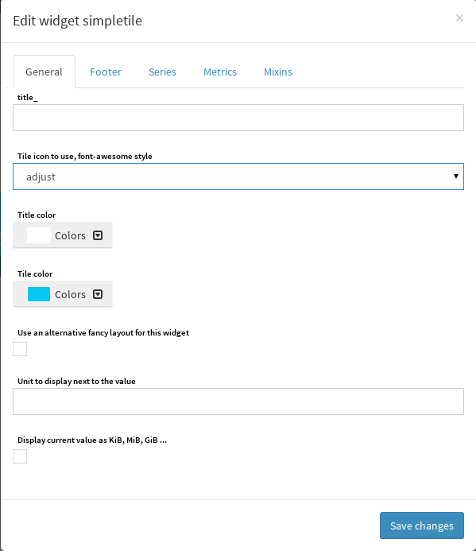

Canopsis Simple Tile¶
This document describes how to use the Simple Tile in Canopsis.
Updates¶
| Author(s) | Date | Version | Summary | Accepted by |
|---|---|---|---|---|
| Florent Demeulenaere | 2016/05/31 | 0.1 | Document creation |
Simpletile widget¶
Overview¶
whose purpose is to display a metric value with text, icons The Canopsis Simpletile widget can show a metric in a esthetic way
Create a simpletile in a view¶
Inserting a simpletile widget in a canopsis view requires management rights. please refer to the canopsis rights management to know more about this topic.
First, choose a view where the simpletile will be inserted. When done, switch to insert widget edition mode, choose the simpletile in the list and click on it. The specific form for the simpletile is displayed and let input this widget configuration.
Simpletile parameters are explained below.
Simpletile widget configuration¶

Options¶
- Title : the widget title
- Tile icon to use, font-awesome style : icon to use
- Title color : the color title
- Tile color : the tile color
- Use an alternative fancy layout for this widget : icon is displayed near metric value
- Unit to display next to the value : unit, text to display next metric value
- Display current value as KiB, MiB, GiB ... : human readable value